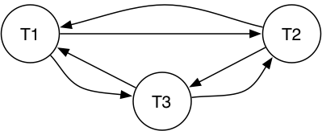

COMP3311 20T3 ♢ Serializability ♢ [0/10]
Serializable schedule:
- concurrent schedule for T1 ..Tn with final state S
- S is also a final state of a possible
serial schedule for T1 ..Tn
Abstracting this needs a notion of schedule equivalence.
Two common formulations of serializability:
- conflict serializibility
(read/write operations occur in the "right" order)
- view serializibility
(read operations see the correct version of data)
COMP3311 20T3 ♢ Serializability ♢ [1/10]
❖ Conflict Serializability | |
Consider two transactions T1 and T2
acting on data item X.
Possible orders for read/write operations by T1 and T2:
| T1 first |
| |
| T2 first |
| |
| Equiv? |
| R1(X) R2(X) |
| |
| R2(X) R1(X) |
| |
| yes |
| R1(X) W2(X) |
| |
| W2(X) R1(X) |
| |
| no |
| W1(X) R2(X) |
| |
| R2(X) W1(X) |
| |
| no |
| W1(X) W2(X) |
| |
| W2(X) W1(X) |
| |
| no |
If T1 and T2 act on different data items,
result is always equivalent.
COMP3311 20T3 ♢ Serializability ♢ [2/10]
❖ Conflict Serializability (cont) | |
Two transactions have a potential conflict if
- they perform operations on the same data item
- at least one of the operations is a write operation
In such cases, the order of operations affects the result.
If no conflict, can swap order without affecting the result.
If we can transform a schedule
- by swapping the order of non-conflicting operations
- such that the result is a serial schedule
then we say that the schedule is
conflict serializible.
COMP3311 20T3 ♢ Serializability ♢ [3/10]
❖ Conflict Serializability (cont) | |
Example: transform a concurrent schedule to serial schedule
T1: R(A) W(A) R(B) W(B)
T2: R(A) W(A) R(B) W(B)
swap
T1: R(A) W(A) R(B) W(B)
T2: R(A) W(A) R(B) W(B)
swap
T1: R(A) W(A) R(B) W(B)
T2: R(A) W(A) R(B) W(B)
swap
T1: R(A) W(A) R(B) W(B)
T2: R(A) W(A) R(B) W(B)
COMP3311 20T3 ♢ Serializability ♢ [4/10]
❖ Conflict Serializability (cont) | |
Checking for conflict-serializability:
- show that ordering in concurrent schedule
- cannot be achieved in any serial schedule
Method for doing this:
- build a precedence-graph
- nodes represent transactions
- arcs represent order of action on shared data
- arc from T1→T2 means
T1 acts on X before T2
- a cycle indicates not conflict-serializable.
COMP3311 20T3 ♢ Serializability ♢ [5/10]
❖ Conflict Serializability Example | |
Example schedule which is not conflict serializable:
T1: R(X) R(Y) W(X) W(Y)
T2: R(X) W(X)
T3: R(X) W(X)
attempted swaps
T1: R(X) W(X) R(Y) W(Y)
T2: R(X) W(X)
T3: R(X) W(X)
Precendence graph for the above schedule:

COMP3311 20T3 ♢ Serializability ♢ [6/10]
View Serializability is
- an alternative formulation of serializability
- that is less conservative than conflict serializability (CS)
(some safe schedules that are view serializable are not conflict serializable)
As with CS, it is based on a notion of schedule equivalence
- a schedule is "safe" if view equivalent to a serial schedule
The idea: if, across the two schedules ...
- they read the same version of a shared object
- they write the same final version of an object
then they are
view equivalent
COMP3311 20T3 ♢ Serializability ♢ [7/10]
❖ View Serializability (cont) | |
Two schedules S and S' on T1 .. Tn
are view equivalent iff
- for each shared data item X
- if, in S, Tj reads the initial value of X,
then, in S', Tj also reads the initial value of X
- if, in S, Tj reads X written by Tk,
then, in S' Tj also reads the value of X written by Tk in S'
- if, in S, Tj performs the final write of X,
then, in S', Tj also performs the final write of X
To check serializibilty of
S ...
- find a serial schedule that is view equivalent to S
- from among the n! possible serial schedules
COMP3311 20T3 ♢ Serializability ♢ [8/10]
❖ View Serializability Example | |
Example: consider the following concurrent schedule
T1: R(A) W(A) R(B) W(B)
T2: R(A) W(A) R(B) W(B)
If view serializable, the read/write behaviour must be like one of
-
T1: R(A) W(A) R(B) W(B)
T2: R(A) W(A) R(B) W(B)
-
T1: R(A) W(A) R(B) W(B)
T2: R(A) W(A) R(B) W(B)
COMP3311 20T3 ♢ Serializability ♢ [9/10]
❖ View Serializability Example (cont) | |
Reminder of concurrent schedule
T1: R(A) W(A) R(B) W(B)
T2: R(A) W(A) R(B) W(B)
In the concurrent schedule
- A: T1 reads initial, T2 reads T1's write, T2 writes final
- B: T1 reads initial, T2 reads T1's write, T2 writes final
In T1;T2
- A: T1 reads initial, T2 reads T1's write, T2 writes final
- B: T1 reads initial, T2 reads T1's write, T2 writes final
So, concurrent schedule is view equivalent to T1;T2
COMP3311 20T3 ♢ Serializability ♢ [10/10]
Produced: 15 Nov 2020